Archives Actus d'avant départ
|
Pour consulter une archive, cliquez sur un lieu ci-dessous |
| 2009 Caraïbes |
| 2009 Panama-Galapagos |
| 2009 Gambier |
| 2010 Marquises |
| 2010 Tuamotu |
| 2010 Tahiti |
| 2010 Cook-Niue |
| 2010 Tonga - Fidji |
| 2011 Nouvelle Zélande |
| 2012 Australie |
| 2012 Polynésie |
| 2013 Hawaii |
| 2013 Canada |
| 2013 USA |
| 2014 Costa Rica |
| 2015 Costa Rica |
| 2016 Costa Rica |
| ...ou revenez aux actualités |
27 mai 2009 - Jour J-1
Ca y est. Nous avons reçu la chaussette de spi qui était restée en Guadeloupe et nous l'avons enfilée sur le spi, ce qui a donné cette saucisse blanche, longue et fine le long du quai. Vu la difficulté que nous avons eu à l'y loger, je suppose qu'en navigation ce ne sera pas une partie de plaisir. On verra bien et, de toutes façons, je vous tiendrai au courant.
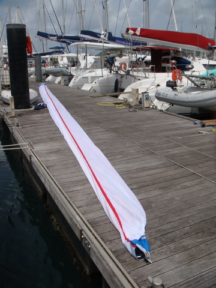
Le même jour, nous avons reçu les pièces de rechange pour le dessalinisateur et une copie (scan) de notre lettre de pavillon. La messe est donc dite. Ite missa est, pour les latinistes. Dés demain, nous quitterons enfin le Marin pour Los Roques, au nord du Vénézuéla. Adios amigos !! C'est d'ailleurs ce que Syr Daria a dit à sa nouvelle copine de ponton.
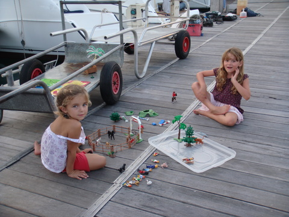
23 mai 2009 - L'enfer du Let It Be
Pour certains, le Let It Be est un vaisseau magnifique, capable d'emporter les explorateurs les plus extravagants vers les destinations les plus exotiques. Pour d'autres, c'est un navire pénitentiaire, dont on ne s'échappe guère et dans lequel on souffre mille tourments. Ainsi en va-t-il de Kenya, que la méchante Cécile poursuit chaque jour de sa vindicte. Sous le prétexte de lui apprendre les notions de base du capitalisme moderne, Cécile n'hésite pas à endosser son costume d'institutrice et de lui infliger des milliers d'heures de mathématiques. Voici un petit aperçu de ce que cela donne:


23 mai 2009 - Ultimes mises au point
Je suppose qu'il en est parmi vous qui se demandent pourquoi on n'est pas encore parti. Pour tout vous dire, on se le demande aussi. A cette distinction près que nous savons ce qui nous manque: notre lettre de pavillon. En attendant, on termine deux ou trois petites choses comme l'installation du nouveau trampoline.

Ceux qui ont l'habitude de jouer au jeu des 7 erreurs l'auront remarqué: notre trampoline flambant neuf, que nous avons reçu après 6 semaines d'attente et deux essais infructueux (le premier que nous avons reçu était destiné à un Lagoon 440, le deuxième était un envoi vide - sic!), ce nouveau trampoline donc est totalement inadaptable à notre bateau (à tel point qu'on se demande si les fabricants n'étaient pas sous l'emprise d'une quelconque substance illicite lors de l'élaboration). Nous allons donc, à notre grand regret, garder l'ancien dont les noeuds proéminents et les mailles trop larges ruinent les pieds de nos enfants (et les nôtres, quand nous les y risquons).
Qu'à cela ne tienne. Pour se changer les idées, on n'a rien trouver de mieux que s'envoyer en l'air. J'ai donc hissé Cécile en haut du mât pour qu'elle y installe une poulie et y fasse passer la drisse de spi.

A ce sujet, il est intéressant de noter que nous avons décidé de passer le week-end aux anses d'Arlets, à 10 miles du Marin. Comme on était au portant et que le vent était calme (10-15 noeuds), on a décidé d'envoyer le spi pour la première fois, pour voir. On a bien vu que notre spi était bien là mais que la chaussette qui devait l'accompagner et qui permet de le hisser et de l'affaler avec quelque facilité n'était pas là. Apparemment, cette chaussette a dû rester dans les tirroirs d'Incidences Voiles sprl, à La Rochelle, ce qui nous laisse penser que nous allons devoir rester quelques jours de plus au Marin, afin de la récupérer...
18 mai 2009 - Pas de nouvelles
Eh oui, je n'ai plus rien de neuf à écrire. Depuis le temps qu'on est ici, j'ai déjà eu l'occasion de tout vous décrire. La semaine passée s'est déroulée sans événement majeur, à part les discussions de marchand de tapis avec le vendeur. L'été approche et la température augmente un peu chaque jour (32°C selon le thermomètre mais au moins 50°C selon moi). On a presque fini la préparation du bateau puisqu'il ne reste qu'une réparation minime sur la coque, le placement du nouveau trampoline, la mise à poste de la drisse de spi (il manque une poulie au sommet du capelage d'étai) et l'achat de quelques pièces de rechange pour le dessalinisateur. Tout cela devrait être terminé ce mercredi et nous pourrons partir ! Enfin !
Hélas, notre lettre de pavillon ne sera pas disponible avant un mois. Autrement dit, nous sommes sensés rester au Marin pendant encore au moins 5 semaines, ce qui rend notre planning irréalisable. Comme dirait Hugues: "Diablos". Mais, sur les conseils de l'amiral Cothey (voir onglet Balises), nous allons quand même mettre le cap sur Los Roques en fin de semaine (en fait, on ira d'abord à Ste Lucie pour être malade quelques heures seulement, puis on ira vers Isla Margarita au Nord du Vénézuela pour les formalités d'entrée et enfin vers Los Roques).

10 mai 2009 - Décoration
Avant de partir, nous voulions que notre bateau se distingue non seulement de ce qu'il fut jadis: un vulgaire bateau de charter mais aussi qu'il aie une touche personnelle, afin que tous, des Caraïbes au Pacifique, puissent, d'un seul coup d'oeil, l'identifier et dire d'une voix tremblante et craintive: "C'est le Let It Be, le bateau de la cruelle Cécile".
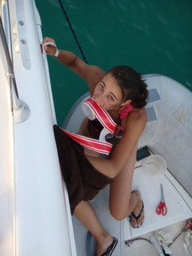
A cette fin, nous n'avons pas ménagé nos efforts. Nous avons évidemment opté pour le rouge en lieu et place du bleu, car chacun sait que c'est la couleur qui inspire la peur. Ensuite, nous avons collé une bande rouge tout au long des coques. Cela nous a valu quelques grands moments, digne de Barnum, quand Cécile, en équilibre sur l'annexe prise dans la houle, tenait d'une main le rouleau, de l'autre la serviette qui sert à assurer un collage de bonne qualité et de la troisième, l'extrémité du papier.
9 mai 2009 - Première blessure
Ce matin, alors que nous barbotions dans l'eau, à la recherche de quelque sensation de fraicheur, nous avons vu Kenya gravir la jupe babord en clopinant, le visage livide déformé par un rictus indescriptible. Ensuite, son pied s'est mis à suinter une substance rouge tandis que sa bouche vibrait du son lancinant de ceux qui vont bientôt mourir.
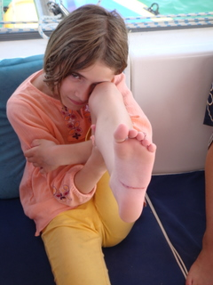
Apparemment, une des vis qui tiennent les échelons de l'échelle de bain avait été mal ébarbée. D'habitude cette échelle ne sert qu'à sortir de la mer pour monter sur le bateau mais il semble que Kenya l'ait utilisée de manière moins académique. Quoi qu'il en soit, elle s'est ouvert la plante des pieds d'une maléole à l'autre, superficiellement. N'empêche, en plus de l'horrible douleur qui l'a tenailée pendant des semaines, Kenya a dû supporter la vue de ses frères et soeurs jouant dans la mer alors que pour elle, c'était pieds au sec jusqu'à cicatrisation...
7 mai 2009 - Le déluge, le vrai.
Voici quelques jours que je n'ai pas pris la peine de vous informer de l'état d'avancement de notre projet. Et pour cause: les plus informés d'entre vous l'auront vu, lu ou écouté, la Martinique est actuellement en alerte orange suite à des pluies abondantes.
Je n'oserais pas être péremptoire mais il me semble cependant qu'effectivement, nous sommes copieusement arrosés depuis une semaine. Cela a commencé à Saint Anne mais ça continue au Marin. De mémoire d'Eric, oncques ne vît plus d'eau se déverser sur la mer, à part durant le déluge, bien entendu.
Mais toute cette eau n'entame pas notre moral de découvreur avant-gardiste. C'est pourquoi, profitant d'une éclaircie, Cécile s'est faufilée dans la chaise de Kalfa (ça m'étonnerait que l'ortographe soit bonne). Bref, je l'ai hissée en haut du mât à l'aide de mes bras musclés.
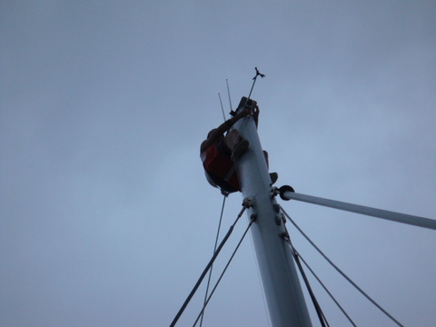
Pourquoi tant d'efforts me demanderez-vous ? Pour installer la drisse de spi, vous répondrai-je tout de go. En effet, nous sommes actuellement au ponton de Caraïbes Grément. Cette société dont la popularité en Martinique n'a d'égale que la compétence, va nous remplacer les haubans et l'étai, afin que nous puissions naviguer sans crainte de démater bêtement.
Quel rapport avec la drisse de spi ? me demanderez-vous avec acuité. Je vous répondrai (et j'avoue que sur ce coup-là, je pompe un peu) que sans les haubans, le mat tombe. Donc, pour remplacer les haubans, on utilise les drisses temporairement. Donc on a installé la drisse de spi puisqu'on va en avoir besoin.
Tout cela nous a valu de grimper chacun à notre tour en haut du mât et, naturellement, nous n'avons pas été capables de mettre la drisse à poste, probablement par incompétence mais plus vraisemblablement par manque de chance.
Quoi qu'il en soit, les gens de Caraïbes Grément ont rempli leur mission et notre bateau dispose maintenant de haubans et d'un étai flambant neufs. Et, soyons honnêtes, d'une drisse de spi d'une esthétique irréprochable. Dans le feu de l'action, on a aussi mis à poste notre nouveau génois blanc à bande rouge (comme le baron ou les tomates).
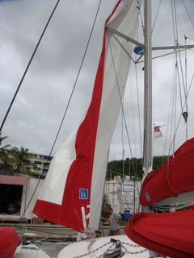
Mais je me perds en détail. Revenons dès lors au sujet du message: la pluie. Eh bien, vous le croirez si vous le voulez mais elle n'a pas cessé, comme en témoigne cette photo apocalyptique prise par Cécile:
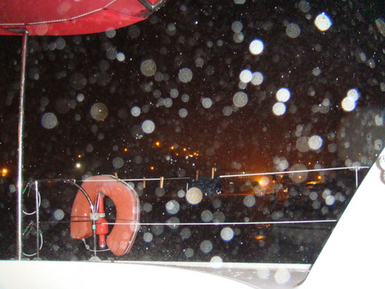
Décidémment, nous avions quitté la Belgique pour cause de ciel bouché et on se retrouve dans les mêmes conditions, avec 20 degrés de plus toutefois. J'interprète cela comme un signe: il faut qu'on parte aux Marquises au plus vite...
1er mai 2009 - Week end à Saint Anne
Cette fois, ça y est ! On est parti. Les gens de chez Sparkling Charter (ceux à qui on a acheté le bateau), sont venus nous trouver pour nous dire que malgré toute la sympathie que nous inspirions, les places de ponton étaient comptées. En clair, il fallait qu'on fasse place nette. On a donc largué les amarres. Mais comme le bateau n'est pas prêt, on s'est contenté d'aller mouiller dans la première crique au large du port pour le week end, sachant que lundi, nous serions de retour.
Le vendredi matin, il pleuvait sans discontinuer. Je ne suis pas habitué aux tropiques et je reste donc chaque fois impressionné: il est tombé une telle quantité d'eau que je suis resté coincé sous un abri (comme 5 autres personnes) avec mon PC sous le bras à attendre de pouvoir faire plus de 5 pas sans être trempé. Une petite diminution du débit d'eau verticale m'a permis de me faufiler jusqu'au bateau, sans immerger mon PC. Nous avons donc pu quitter le port vers 13h30 et jeter l'ancre vers 14h à Saint Anne, tout près du Marin (4 miles). Le lendemain, samedi, nous avons savouré notre premier mouillage en famille . Ce fut l'occasion de reprendre la classe et d'essayer nos nouveaux jouets.
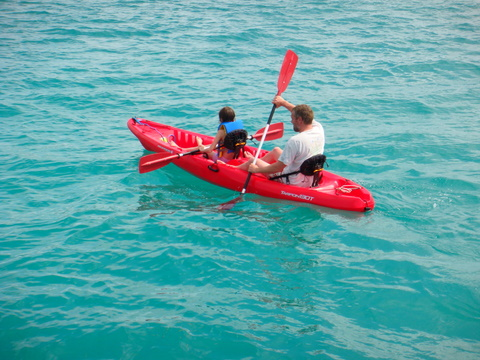
Le samedi, la journée s'est déroulée sans surprise: classe le matin, jeux nautiques l'après midi et barbecue postposé le soir, pour cause d'intempérie. Le dimanche matin, l'aube n'annonçait rien de bon. Il règnait une ambiance de fin du monde. Sans être un expert en la matière, j'avoue que la photo prise par Cécile illustre bien l'ambiance vespérale: difficile de distinguer le ciel de la mer...
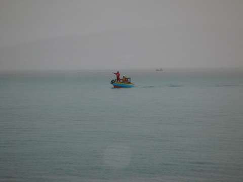
Et, de fait, dès 8h du mat, ce fut le déluge. Sans rire, nous avons vécu un épisode biblique. Je n'ai jamais vu autant d'eau tomber du ciel en 4h. Fort heureusement, d'une part, le bateau s'est avéré étanche, par le haut comme par le bas, et en plus l'eau tombante était presque aussi chaude que la mer. C'est ce qui m'a permis de ne pas mourir bêtement lorsque j'ai dû aller écoper l'eau du dinghy (lequel menaçait de sombrer, rempli à ras bord d'eau de pluie).
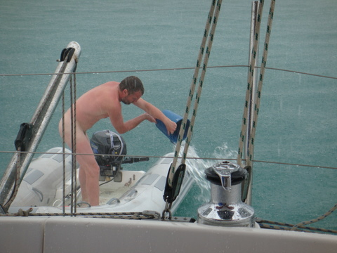
Mais, les meilleures choses ont une fin. Vers 12h03, le soleil est apparu et n'a plus quitté le devant de la scène (on notera au passage que la matinée nous a permis de remplir nos réservoirs d'eau, grâce au système de récupération d'eau de pluie que j'ai mis en place, tandis que l'après-midi nous a permis de faire le plein de soleil photovoltaïque). Bref, la fin du week end fut assez calme, ponctuée toutefois pas l'arrivée d'une régate locale assez colorée.
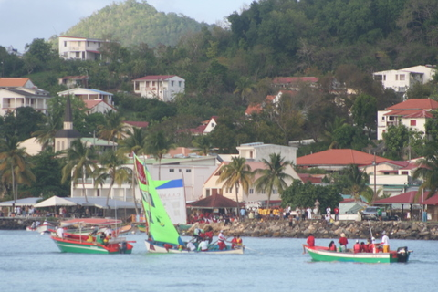
26 avril 2009 - La Martinique - Terre d'accueil
Je vais pas vous mentir: on est toujours en Martinique. Comme on y est depuis un moment, on commence à connaître du monde. Il y a Franck, le Suisse, spécialiste en tout, pour autant que ça concerne le voilier. Il y a monsieur Corbeau, celui qui a acheté un bateau de chez Sparkling en même temps que nous (et qui partage les bonnes et mauvaises surprises avec nous). Il y a Mr Tilikum, qui n'a plus qu'un chicot noirâtre en guise d'incisive mais qui peut remplacer votre frigo les yeux fermés. Et je vous passe le détail.

En effet, nous ne sommes pas là pour glander. Non seulement les cours ont repris et la nouvelle maîtresse des enfants a parfois un regard de braise mais, en plus, en guise de récréation, on est obligé de remplacer le bimini. On notera à ce propos que le bimini est composé de 2 parties, séparées par un bout de gel-coat blanc. Ce qui fait que nous arborons un pavillon hollandais géant (ou français, c'est selon).

Heureusement, après les cours viennent les loisirs. Notamment, les courses au GB du coin. Comme on va manquer de tout, on fait des provisions. Et chacun sait qu'il n'y a rien de tel que les pâtes pour remplir un estomac purgé par une longue traversée.

Une fois, les sacs bien remplis, on fait comme a Bruxelles: on retourne au parking et on charge la voiture. Ici, ils ont été sympas: ils ont prévus un ponton pour les visiteurs dépourvus de véhicules à roulettes. Avec notre dinghy, on est les rois...

25 avril 2009 - Les préparatifs continuent
Eh oui. A force de continuer, les préparatifs n'en finissent plus. Aujourd'hui, on a décidé d'acheter les trucs de longue conservation dont on ne pourrait se passer. Pendant que je restais sur le bateau avec les enfants, Cécile a littéralement rempli la voiture d'eau, de bière et de jus. Elle a aussi dévalisé le rayon pâtes et riz, sans oublier les tomates, artichaux et olives en boîte. Et pour faire bonne mesure, elle a saupoudré le tout de sucre, PQ, condiments, savon, etc. Bref, le bateau est bien chargé. D'ailleurs, j'écris ces lignes au bord de la plage, à Saint-Anne, en surveillant du coin de l'oeil les enfants qui se baignent, tandis que Cécile est à bord en train de ranger les achats d'hier.
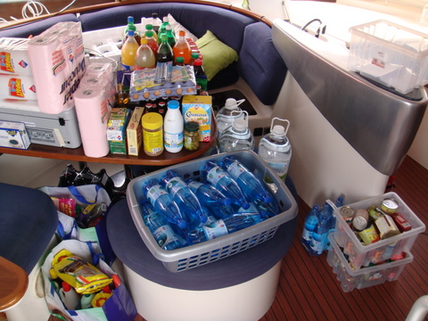
Comme j'entends déjà d'ici les ricanements sous-entendant que je me la coule douce pendant que Cécile travaille, je n'hésite pas à dire: "Et alors ?". Tout le monde sait que le rangement est une affaire de femme. Surtout dans un bateau ou l'espace est compté. En plus, je ne fais pas que rien. J'ai aussi installé la machine à laver dans la toilette babord avant. Sur la photo, la machine n'est pas encore à sa place définitive mais on voit déjà que la toilette (en arrière-plan) a disparu.
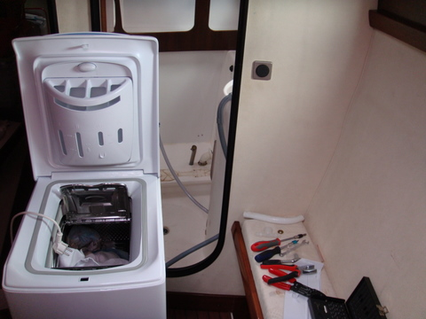
Incroyable ! Avec cet appareil, nous sommes autonomes, comme les robinsons suisses. Ce matin, je l'ai branchée et devinez quoi ? Il y avait une fuite dans l'arrivée d'eau et ce fut le déluge. Mais je suis tenace. J'ai identifié le joint responsable et je n'ai plus qu'à trouver un moyen de le rendre étanche.
A part ça, les enfants continuent à se cogner partout (Syr Daria est même tombée par un des capots de pont mais sans mal, heureusement). La vie au port ne les amuse pas beaucoup, il faut dire que papa et maman se démènent comme des diables et ne consacrent que peu de temps à leur progéniture. Cécile a quand même mis au point un programme d'activité pour chacun des enfants: ranger des cabines, faire la vaisselle, mettre et débarrasser la table, ouvrir et fermer les hublots, etc. Mais rien n'y fait, ces petits garnements continuent à lui témoigner la même ingratitude. Alors, pour changer, nous avons décidé de consacrer notre dimanche aux loisirs. D'abord la plage à Saint Anne (à côté du Club Med), ensute la traversée de l'île et la visite des jardins de Balata.
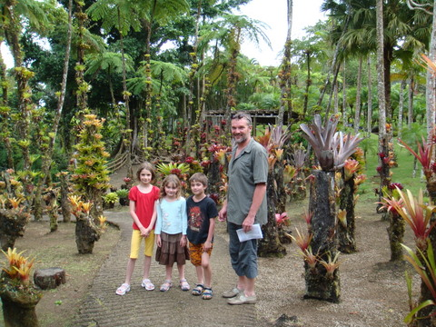
Les plantes tropicales sont impressionnantes et le jardin bien entretenu. Hélas, la pluie s'est mise à tomber de plus en plus fort, nous obligeant à chercher abri. Pour passer le temps, les enfants nous ont fait une démonstration de salsa. Et on a fini par retrouver la voiture en faisant le parcours botanique au pas de course.
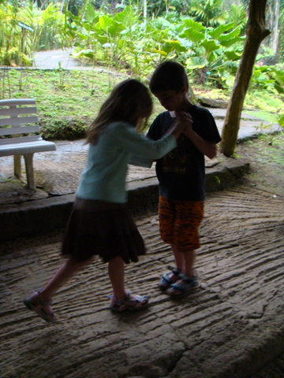
22 avril 2009 - Arrivée des enfants
Le grand jour est arrivé: bientôt les enfants seront à bord et nous serons de nouveau en famille. Dès le matin, une activité fébrile s'est créee sur le bateau, afin que tout soit prêt pour l'arrivée des enfants. Cécile a mis un point d'honneur à ce que le bateau soit aussi accueillant que possible. Elle a donc passé de nombreuses heure à paufiner la décoration des cabines enfants (généralement, quand nous faisons des croisières, c'est assez neutre, pour ne pas dire triste). Et voilà ce que ça donne:
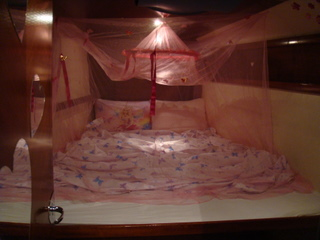
Pas mal hein ? Une vraie chambre de princesse, avec lit à baldaquin (enfin presque...). Pendant ce temps, Eric se livre à son nouveau hobby: le bricolage. Aujourd'hui: démontage (et remontage) de winch. Ceux qui me connaissent un peu n'en reviennent sûrement pas mais c'est pourtant vrai: je bricole (j'ai même acheté aujourd'hui une boîte à outils comme dans mes rêves: y a tout ! même des trucs pour visser dans les coins).
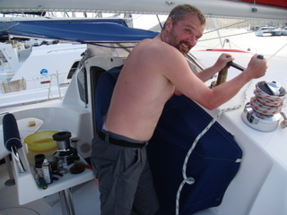
Et puis voilà, on est allé à l'aéroport chercher les enfants. L'avion avait 5h de retard mais heureusement, Air Caraibes nous avait téléphoné pour nous prévenir. On a récupéré les petits avec plein d'émotion et on les a directement emmené boire un jus de fruit au bord de mer.
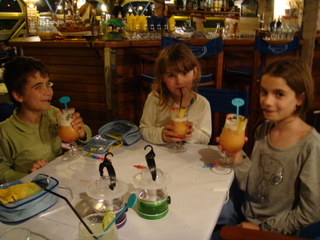
13 au 17 avril 2009 - Shopping à Saint Martin
Comme prévu, nous avons repris la route vers le nord-ouest. Après 26h de navigation, nous sommes arrivés à Saint Martin, île dont la particularité est d'être divisée en 2: au nord, les français, au sud les hollandais. Un peu comme chez nous, mais dans l'autre sens. La partie sud est donc prospère et c'est là que nous allons magaziner, comme disent les Québecquois. On notera, pour la petite histoire, que Saint Martin est également un port franc. C'est d'ailleurs la raison pour laquelle nous sommes venus jusqu'ici.
On a donc mouillé dans Simpson Bay, aux eaux bleuoyantes et chaudes.
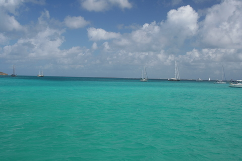
Notre quiétude était totale, troublée seulement par l'envol majestueux d'aéroplanes, décollant en silence vers les cieux antillais. Ce spectacle est non seulement merveilleux mais il se perpétue régulièrement, vers 17h43 chaque jour. C'est vraiment fantastique.
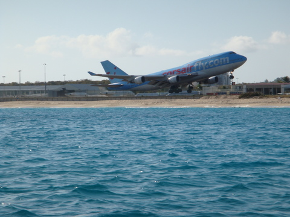
Les yeux encore emplis de merveilleuses images, nous avons décidé de franchir le pont qui sépare la baie de la lagune. Non pas tant pour fuire cette eau trop limpide que pour nous rapprocher des shipchandlers. Qu'est-ce donc, me demanderez-vous ? C'est comme le Brico, mais pour les bateaux. On y trouve tout ce qu'il faut pour équiper un bateau pour faire le tour du monde.
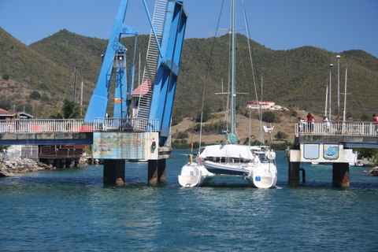
On a acheté un nombre invraisemblable de trucs, plus indispensables les uns que les autres:
- Des nouvelles batteries (8 T105 de 6V et 225 Ah pour ceux que ça intéresse) avec les cables pour les connecter.
- Du cordage: 2x70 pieds de cordage 14mm pour les écoutes de spi, 2 X 15 pieds de 8 mm pour les amarres de dinghy et de kayak, 150 pieds de glène pour prolonger la chaine, 40 pieds de cordage en nylon flottant pour le wake board, 40 pieds de 10mm pour le cas où, etc.
- 10 serres-joint de 19mm et 10 autres de 40mm pour les durites et autres tuyaux. Des cosses et connecteurs, une pince à sertir, de l'acétone, un alternateur Hitachi 12V de 80A, du tuyau de 15mm, de 20mm et de 40mm.
- Un convertisseur sinusoïdal 1800W pour avoir du 220V à bord (c'est un truc qui convertit le courant 12V continu des batteries en courant alternatif pour alimenter la TV, les PC, la machine à pain, etc).
- Un kayak 2 places avec des rames, une chambre à air de camion pour tirer derrière le dinghy, une canne à pêche pour Sidney, du matériel de pêche à la traîne pour Eric, des tournevis, des lampes leds pour le carré, des lampes G4 de rechange, des masques, palmes et tubas pour toute la famille, de la chaîne et des cadenas pour attacher l'annexe quand nous allons à quai, etc.
- Sans oublier, de l'huile pour les moteurs diesel de propulsion, de l'huile pour le moteur 2 temps de l'annexe, de l'huile pour les en-bases (c'est le truc qui sépare les moteurs de l'hélice) et de l'eau distillée pour les batteries, des marqueurs pour savoir quelle longueur de chaîne on mouille (ben oui, c'est pas évident de savoir combien on laisse filer alors que c'est très important puisque c'est ce qui détermine la solidité du mouillage).
- Il nous fallait aussi des jerrycans pour le gasoil (9 x 20L) et l'essence (2 x 20L), en prévision des longues traversées ou des endroits où l'essence est rare.
- Evidemment, la liste ne serait pas complète sans la plaque de PVC pour faire les cloisons et autres rangements dans le bateau, les drapeaux de complaisance (ce sont les oriflammes que nous mettons en vergue dans les haubans quand nous arrivons dans une nouvelle contrée, afin de témoigner de notre respect des populations locales, sachant que nous avons évidemment un pavillon belge qui flotte fièrement à la poupe de notre bâtiment. Comme on va traverser beaucoup de pays, on a besoin de beaucoup de pavillons de complaisance.), du téflon, de la graisse siliconée, des gants, des gilets de sauvetage pour les enfants, etc.
11 avril 2009 - Escale aux Saintes.
Ensuite, nous avons remis le cap au nord vers la Guadeloupe. Nous sommes arrivés aux Saintes en fin de journée après une navigation plutôt calme. D'après les Français, c'est le plus beau mouillage des Caraïbes. C'est évidemment pur chauvinisme mais il faut reconnaître que l'endroit est assez pittoresque.
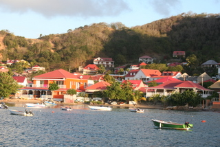
Nous avons même profité de la soirée pour boire un petit cocktail au bord de l'eau.
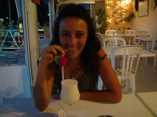
10 avril 2009 - (Faux) Départ Martinique.
Cette fois-ci, c'est fait. On a quitté la Martinique pour Saint Martin, avec escale aux Saintes, en Guadeloupe.
Avant de partir, Cécile a donné un dernier coup de propre au frigo.
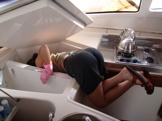
On a largué les amarres plein d'alan et on a commencé la remontée de la Martinique, côté ouest. Nous avons longé la côte sous le vent (on était donc protégé du vent d'est par la terre). Tout allait bien, je sirotais une petite bière en pensant à rien. Dès qu'on a dépassé le nord de l'île, la mer est devenue plus forte, le vent plus violent et Cécile plus malade. On a donc fait une escale de nuit inopinée en Dominique, pour se reposer et admirer le paysage.
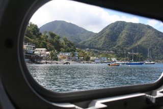
Naturellement, Cécile s'est employée à effacer toute trace de sa déchéance nocturne.
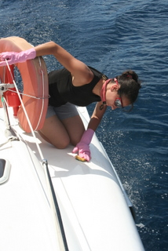
9 avril 2009 - Le Marin, Martinique.
Bon, je reconnais que ça manque un peu d'originalité mais, effectivement, nous sommes toujours en Martinique. De toutes façons, notre bateau n'a plus de voiles, plus d'annexe (c'est le dinghy) ni de radeau de survie. Tous ces éléments indispensables pour la navigation sont partis en révision.
Aujourd'hui, on s'est révéillé sous un petit crachin, entrecoupé d'averses tropicales, genre Tahiti douche, pour ceux qui s'en rappellent. Comme on n'est pas du genre à craindre la pluie, on n'a pas hésité à remettre les voiles (revenues de la voilerie et, au dire des spécialistes, encore valables pour deux ans). Quand je dis remettre les voiles, je veux dire remettre les voiles, littéralement, et non pas quitter le port.

Cécile a commencé à mettre les lattes en PVC qui assurent un peu de tenue à la voile. Il y en a 7 dans notre grand'voile. Evidemment, ça a pris un peu de temps car les grains se succédaient avec régularité. A chaque fois, Cécile et Adrien (notre conseiller en montage de voile) se réfugiaient sous le cockpit tandis que moi, j'y étais déjà depuis un moment car je déteste être mouillé inutilement.

De toutes façons, ça n'a rien changé car, une fois la grand'voile lattée, on a essayé de la placer sur la bôme, au moyen d'un cabestan qui s'est avéré grippé. Pour les ignares, la bôme, c'est la poutre horizontale qui vient se fixer au pied du mât et à laquelle est fixée la grand'voile. Pour les incultes, un cabestan est une sorte de poulie à axe vertical autour de laquelle une corde s'enroule et qui permet de soulever des montagnes (ou des ancres, quand le cabestan est sur un bateau). Cécile est donc partie faire des courses pendant que je démontais le winch (=cabestan moderne) avec Adrien et la moitié du port, tant est grande mon incompétence en matière de cabestans (= winch de jadis).
Pour ceux que ça intéresse, nos éoliennes et panneaux solaires sont maintenant opérationnels. En plein soleil, les panneaux délivrent 24A soit 280W sous 12V. Compte tenu du fait que nous avons installé 400W, ce n'est pas trop mauvais. Toutefois, on n'est pas en plein soleil toute la journée. Mais, même lorsque le ciel est nuageux, on génère entre 10 et 20A. Pour les éoliennes, c'est plus compliqué. Il semble qu'en dessous de 10 noeuds de vent, la production soit négligeable. A près ça augmente (encore heureux !) mais comme on est au mouillage, le vent est plutôt capricieux. Je vous en dirai plus bientôt.
6 avril 2009 - Un dimanche en Martinique.
C'est pas parce qu'on ne travaille plus qu'on ne peut pas profiter du jour du seigneur pour ne rien foutre. Ce dimanche, on a donc décidé de faire du cruising dans l'île. On a commencé par se rendre à Robert, dans l'est, pour manger des z'habitants, à savoir des écrevisses. Cécile, en véritable gourmet, n'a pas pu s'empêcher de prendre un rhum vieux...
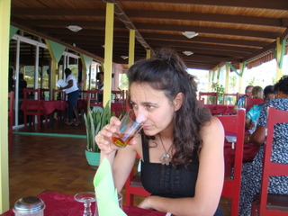
Nous avons donc mangé chez Fofor, haut lieu de la gastronomie Martiniquaise, avant de reprendre la route. Comme prévu, la Martinique est couverte de champs de bananiers, que l'on traverse avec un regard médusé. Pour une raison mystérieuse, les régimes de bananes sont embalés sur l'arbre (ce sont les sacs bleus).
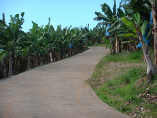
Après avoir beaucoup roulé, nous sommes arrivés dans la réserve de Rivière Blanche, lieu de prière dominical pour des dizaines de jeunes Martiniquais et lieu de promenade pour Cécile et moi. Curieusement, le sud de l'île (où se trouve notre port d'attache) est assez aride tandis que l'intrérieur des terres est nettement plus tropical. La végétation y est luxuriante et les filles accueillantes...
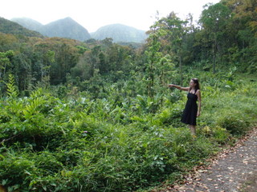
5 avril 2009 - Préparation du bateau.
Enfin une bonne nuit! Notre moustiquaire a rempli son office: pas de piqûre. On entendait bien les bzzzz des moustiques mais de l'autre côté du grillage. Un peu comme, bien à l'abri dans un lit chaud, on entend à l'extérieur la pluie marteler les carreaux ou les ardoises. Dès qu'on sait que l'on ne risque rien, le bruit lui-même a quelque chose de jouissif.
Donc, frais comme un gardon, je me suis lancé dès potron minet dans des défis technologiques. J'ai en effet décidé d'avoir accès à Internet sans sortir du bateau. A cette fin, j'ai construit une antenne à la pointe du progrès (c'est ce truc verdâtre qu'on voit sur la photo) à base de saladier.
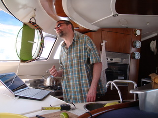
Jusqu'à présent, malgré mes efforts, je n'ai pas réussi à me connecter. Sans doute est-ce dû à la malchance ou à ma techno trop en avance sur son temps.
Quoi qu'il en soit, nous avons profité de ce samedi pour nous éloigner un peu du port et de ses effluves nauséabondes pour nous rendre à Saint Anne. Nous avons piqué une tête dans la grande bleue qui, par ici, est vraiment bleue.
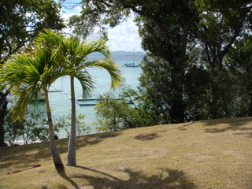
Curieusement, ce petit bain de 16h fut salutaire puisqu'à peine rentrés, nous avons pu constaté avec un émerveillement un peu naïf que notre éolienne tribord effectuait ses premières rotations. Que d'émotions !!
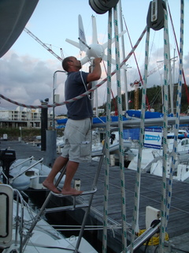
4 avril 2009 - Préparation du bateau.
Nous croyions nous la couler douce sous les tropiques pendant 3 ans (et, a fortiori, pendant les 3 premières semaines passées en amoureux, rien qu'à deux...)
Mais non. Depuis 3 jours, on court dans tous les sens. Ca a commencé par de longues discussions sur le meilleur moyen d'installer le moteur d'annexe sur le portique. Il faut dire que le moteur flambant neuf qui git dans le cockpit ne pèse pas moins de 52 kg, ce qui le rend totalement impossible à manipuler par un homme, même s'il est doté d'une musculature imposante, ce qui n'est pas mon cas contrairement à ce que m'avaient laissé croire les flatteries de Cécile.
Après, on s'est rendu compte qu'on avait eu des bactéries dans le réservoir de gasoil. Ca fait une pâte qui flotte entre deux hydrocarbures et qui finit par obturer les tuyaux, provoquant l'arrêt des moteurs. Il a donc fallu purger et nettoyer le réservoir, ce qui s'est avéré impossible in situ parce que les concepteurs dudit réservoir n'ont pas prévu de trappe de visite. Donc, on a du enlever le réservoir. Hélas, il a fallu pour cela démonter les bossoirs. Après quelques heures d'efforts, le réservoir a pu être extrait et envoyé au nettoyage.
Nous pensions être au bout de nos peines. Nous étions donc pleins d'enthousiasme en quittant le bateau pour aller faire les courses (eh oui, il faut bien qu'on mange de temps en temps). Et là, paf, la clef se casse dans le barillet. Plus moyen de fermer le bateau. Après de nombreuses tentatives d'extraction du morceau brisé, la conclusion s'impose d'elle-même: il faut démonter la serrure et en commander une nouvelle a Fountaine-Pajot, en France. Et évidemment, en attendant, pas moyen de fermer le bateau et donc, pas question de partir. Heureusement, le démontage de la serrure nous a permis de récupérer la partie de la clef qui s'était coincée et, o chance, nous avions un double...
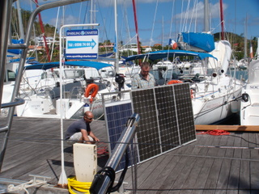
Le temps du repos avait donc sonné. A ce moment, l'électricien qui installait les panneaux solaires nous informa que le quatrième panneau n'avait pas la même taille que les 3 premiers. Le mécanicien surgit alors pour nous dire que le bicône qui permet de passer de la marche avant à la marche arrière devait être déglacé. On s'est pas démonté (de toutes façons, on ne comprenait pas très bien ce que ça voulait dire, à part bien sûr que notre projet était en péril).
Pour changer, on s'est intéressé au dessalinisateur. Apparemment, la molette qui permet de remettre le piston de la pompe haute pression au point bas était défectueux. Un paille. Il nous a quand même fallu près de 4h pour démonter cet appareil (et autant pour le remonter).
Il paraît que c'est la routine. Sincèrement, Cécile et moi, on doute...mais bon, il y a des choses plus importantes dans la vie. Par exemple, la lutte sans merci contre les moustiques. Au début, on a un peu pêché par excès de confiance. Résultat: on s'est fait bouffé par ces petits insectes buveurs de sang. Le deuxième soir, on s'est enduit de crème anti. Apparemment, les moustiques n'aiment pas la citronnelle et, de fait, la crème en question semblait, à l'odeur, en contenir plus que de raison. Helas, cela n'a pas empêché l'hallali et notre deuxième nuit fut, comme la première, piquante. Cécile a donc mis le hola (non, non, pas la ola, comme au foot): elle nous a dégoté une moustiquaire dans un magasin super sympa. On va enfin pouvoir dormir...et vous racontra la suite bientôt.
3 avril 2009 - Le Marin, Martinique.
On a atterri à 14h40 ce premier avril, au Lamentin, l'aéroport de Martinique, à un jet de pierre (pour qui a un bon bras) de Fort de France.
A peine arrivés, nous avons loué une berline de luxe pour nous rendre sur notre yacht. C'est donc avec un plaisir immense que nous avons retrouvé le Let It Be. Après ces émouvantes retrouvailles, nous avons également pu revoir notre petit restaurant et son ponton donnant sur la marina.
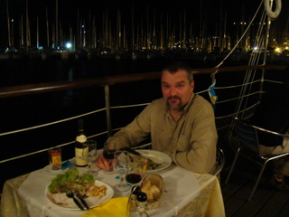
Dès le lendemain, alors que nous pensions profiter de notre nouveau statut de rienfoutistes, nous avons dû gérer des tas de types qui travaillaient sur notre bateau afin d'y installer un portique pour soutenir nos panneaux solaires ainsi que nos éoliennes.
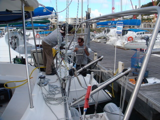
Ca me fait penser que je ne vous ai pas proposé de jeu débile depuis très longtemps: quel détail insolite vous frappe dans la photo ci-dessous? Vous ne voyez pas? Il n'y a pas de voiles... On les a enlevées pour les remplacer. C'est pas bioutifoul ça ? 2 h de boulot en plein cagnard. Pour ceux que ça intéresse, le démontage des voiles est un jeu d'enfants. Il suffit de retirer tout ce qui attache la voile au mât et à la bôme, à savoir, des drisses, des coulisseaux, des bosses de ris, des points d'amure, d'écoute et de drisse, et, pour finir, le lazy-bag et le tour est joué.
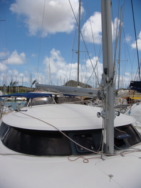
1 avril 2009 - Voilà ! On a quitté le sol belge.
 Voilà ! On est parti. On pensait être seul à attendre le train mais une fois de plus, vous nous avez surpris. Malheureusement, on n'a pas pensé à prendre une photo de vous tous mais sachez quand même que nous étions 19 à attendre le Thalys de 15h13 ce mardi.
Voilà ! On est parti. On pensait être seul à attendre le train mais une fois de plus, vous nous avez surpris. Malheureusement, on n'a pas pensé à prendre une photo de vous tous mais sachez quand même que nous étions 19 à attendre le Thalys de 15h13 ce mardi.
Merci à tous, nous avons versé une larme en nous serrant l'un contre l'autre dans ce train qui nous emmenait vers notre rêve. On avait bien sûr tant de fois imaginé le départ mais on n'avait pas pensé que vous seriez si nombreux à nous soutenir.
Et on ne résiste pas à vous montrer le palace qui nous abrite en bord de piste à Orly, avant notre vol de demain vers la Martinique (au moins, ils ont un WiFi....)
3 mars 2009 - Les temps sont durs. Les sponsors se font rares.
Voilà près de 3 semaines que notre grand jeu est en ligne sur le site et le moins que l'on puisse écrire est qu'il ne rencontre pas le succès escompté. L'idée de base était de rendre le site interactif et de voir ce qui intéressait le plus les visiteurs. La réponse est donc limpide: rien. Je vous parlerais de la Bourse que ça ne changerait rien. Puisque c'est comme ça, je vais me venger en vous livrant quelques citations concernant la bourse:
Qui a dit ?
- La Bourse je m'en fous, j'ai choisi la vie.
- On est volé à la Bourse comme on est tué à la guerre, par des gens qu'on ne voit pas.
- Il y a deux cas dans lesquels un homme ne devrait pas spéculer en Bourse: quand il n'en a pas les moyens et quand il en a.
- Lire attentivement les cours de Bourse, c'est une étude; acheter quelques valeurs, c'est une leçon.
Il y a Alfred Capus, Mark Twain, Guy Bedos et René Dorin. Et je donnerai la bonne réponse à quiconque sponsorisera notre périple. Na !
20 Jan 2001 - Ski de fond dans le Jura ...
Décidémment, le Jura aura été notre destination de prédilection ces derniers mois. Avec Cécile, on avait décidé de faire une partie de la GTJ (Grande Traversée du Jura) en ski de fond, discipline nouvelle pour nous deux. Nous sommes donc partis avec une brochette d'experts: Patrick, Marco et Stéphane. Le samedi matin, de bonne heure, nous quittions Chaux-Neuve sous un soleil radieux.

Les premiers pas sous le soleil...
Progressant maladroitement sur nos skis, nous arrivions vers 18h au chalet Gaillard, après une ballade de quelques 25 km entrecoupée d'une halte roborative bien méritée. Inutile de préciser que nous étions fatigués, pour ne pas dire plus. Situé en pleine forêt, le chalet en question est un refuge qui peut offrir un confort rustique à une trentaine de randonneurs. Nous avons donc pu apprécier la saine promiscuité des dortoirs de montagne qui fleurent bon le Morbier et le Mont Louis et qui, la nuit, s'animent des bruits les plus incongrus.

Petit déjeuner au chalet Gaillard...avec Patrick, Marco et Stéphane.
Le lendemain, départ à l'aurore, en direction des Rousses. Notre destination est le chalet de la Frasse, à quelques 25 km de notre point de départ. Hélas, après 30 minutes de ski, nous voyons tomber les premiers flocons. Un quart d'heure plus tard, c'est le grand Nord: la neige tombe dru, le vent souffle en rafales (contre nous, évidemment) et on ne voit pas à 10m. C'est le début du calvaire. Après environ 3h d'efforts, nous nous arrêtons pour manger et tenter de nous sècher un peu en nous agglutinant contre le poële à bois du restaurant (comme tous les malheureux partageant notre sort).
Nous repartons néanmoins le couteau entre les dents et les pieds dans l'eau (les chaussures de ski de fond ne sont apparemment pas prévues pour la poudreuse). Arrivés aux Rousses, on rencontre même un sympathique fondeur du cru qui accepte de faire un bout de chemin avec nous. Heureusement parce qu'avec la neige qui tombe toujours aussi fort, les rails sont impossibles à distinguer et l'on finit par tourner en rond. Bref, encore 4 heures d'efforts et l'on arrive enfin à destination, à la nuit tombée (enfin, on a quand même skié 1/2 heure en forêt dans l'obscurité la plus totale).

Le chalet de la Frasse, rien que pour nous.
Arrivés au chalet, nous constatons avec plaisir que nous sommes seuls (pas étonnant vu les conditions dantesques). Nous avons donc l'entièreté de l'âtre central pour faire sècher nos affaires et profiter d'un bon vin chaud. C'est au coin du feu et avec un bon repas que nous terminons ce périple jurassique.
Que du bonheur et encore merci à Patrick, le GO, grâce auquel nous avons vécu des moments inoubliables.
5 Jan 2009 - Le chemin le plus court ...
...est-il toujours le meilleur ? Si non, quel est alors le meilleur chemin ? Voilà la question qui hante mes nuits en cette période de doute, propre à chaque grande étape de la vie... Jusqu'à présent, l'itinéraire était évident, comme en témoigne la page qui lui est consacrée sur le site.

Projet initial: le Pacifique en 6 mois.
Hélas, plus la date de départ approche et plus on s'interroge, on hésite, on tergiverse, on palabre.
Comme on ne peut pas partir avant le 20 avril car c'est à ce moment que les enfants nous rejoignent en Martinique, on ne pourra franchir le canal de Panama au mieux que vers la mi-mai, soit assez tard pour entamer une traversée du Pacifique de manière à ne pas y séjourner pendant la période des cyclones (décembre à mars), à moins de rivaliser en vitesse avec les coureurs du Vendée Globe. Une alternative consiste à prendre un peu plus de temps pour préparer et tester le bateau dans les Caraïbes, avant de prendre le chemin du Pacifique et de s'y arrêter en cours de route pour hiverner à l'abri probable des cyclones. Dans ce cas, on franchirait le canal de Panama en juin et on irait vers les Gambiers, au sud-est de la Polynésie. On pourrait même passer par l'île de Pâques après les Galapagos, puis rejoindre les Gambiers situées à 2000 nautiques plus à l'ouest et remonter ensuite vers les Marquises en visitant une partie des Tuamotus. De la sorte on prend notre temps pour visiter l'archipel à notre aise et on passe Noel 2009 aux Marquises.
On traverse ensuite la zone cyclonique entre mars et novembre 2009 et on aligne Tuamotus, Iles de la Société, Cook, Samoa et Tonga. Ensuite se pose la délicate question de la sortie de zone: soit au Sud vers la Nlle Zélande, soit à l'Ouest vers le détroit de Torres.
Si l'on va vers l'Ouest, on ajoute encore les Fidji, les Vanuatus et la Nouvelle Calédonie. Ca fait beaucoup d'iles en quelques mois mais ça nous permet peut-être de finir aux Seychelles en 3 ans.

On se la joue 'Tropiques'
Ceci dit, on peut aussi sortir de la zone des cyclones en descendant vers la Nouvelle Zélande, ce qui requiert pas mal de navigation (dans des zones tempérées et donc soumises à des vents fluctuants et une mer parfois capricieuse). Ca rallonge le voyage mais ça nous permet de prendre un peu plus de temps pour visiter les iles et on en profite pour accoster en Nlle Zélande et Australie...

On est parti pour 5 ans...
Décidémment, ce projet nous met vraiment face à nos responsabilités.
9 Dec 2008 - Les éoliennes sont encalées.
Après une étude de marché qui force l'admiration des plus zèlés, je me suis enfin décidé à acheter non pas une mais deux aérogénérateurs (Il paraît qu'une éolienne, ça sert à abreuver les vaches. Comme il n'y a pas de place pour installer un pâturage sur le bateau, je préfère ne pas avoir de vaches à bord - et je ne veux pas entendre de remarques désobligeantes).
Donc, j'ai fini par acheter des Rutland 913 sur un site anglais. Pourquoi un site anglais ? Parce que même avec les frais de livraison, c'était vachement moins cher que sur le continent. Pourquoi des Rutland ? Comme je l'ai dit, c'est un processus long et sinueux qui m'a mené jusqu'à ce maître-achat. Disons que c'est un produit connu et réputé pour sa robustesse et son silence de fonctionnement, qu'il ne coûte que 500€ pièce et que mon grand ami Jérôme, qui a déjà traversé le Pacifique, m'en a vanté les mérites. Malheureusement, ils ne livrent pas aux Antilles. J'ai donc une fois de plus abusé d'un bateau en transat pour fourguer mes 2 splendides engins. A l'heure où j'écris ces lignes, elles attendent donc bien au chaud dans la cabine de pointe d'un Lagoon 440 en partance pour la Guadeloupe.
En définitive, c'est un peu un coup de poker mais bon, que voulez-vous? On a déjà tellement de choses à préparer qu'on ne va pas ergoter pendant 2 ans pour une (ou deux) malheureuse éolienne (aérogénérateur, si vous préférez, mais c'est moins poétique).

Avec 2 engins pareils, on ne manquera jamais d'électricité
2 Dec 2008 - Déménagement.
L'une des phases clefs du projet (et l'un des moments tant redoutés) est arrivé: nous devons déménager et laisser notre maison aux locataires qui arrivent au début de l'année. Depuis quelques semaines, on était déjà occupé à empaqueter nos bagages à destination des Antilles. Voici maintenant que nous emballons le reste, meubles compris, pour faire place nette. Curieusement, on déménage 'à moitié' puisque nous n'allons nulle part. En fait, on fait des beaux paquets qu'on monte au grenier ou qu'on descend dans les caves (avec une proportion non négligeable de 'trucs' qui prennent la direction du parc à conteneurs).

La maison se vide...

Le grenier se remplit
Ca fait quand même un petit pincement au coeur de voir la maison se vider, même si l'on sait que c'est pour la bonne cause. Bientôt, nous serons déjà partis de chez nous sans être encore sur notre bateau. On occupera la maison d'un ami en attendant le grand départ.
26 Nov 2008 - On pense à tout.
En tous cas, on essaie. Dernièrement, nous nous sommes rendus chez une dermatologue pour passer au crible. Eh oui, comme on va passer le plus clair de notre temps au soleil, sous les tropiques, autant prévenir que guérir ! Ce serait dommage de mourrir d'un cancer de la peau alors qu'un cancer généralisé a tellement plus d'allure ! Donc, une inspection méticuleuse a permis de détecter quelques grains de beauté suspects que nous nous sommes fait enlever sur le champ. C'est pas très douloureux mais ça fait quand même 4 à 5 points de suture par grain pour Eric.

C'est joli, hein ?
Voilà encore un problème hors des pieds !
8 Nov 2008 - La voilerie: le mystère du dacron et l'effet d'incidence.
Eh non, il ne s'agit pas du dernier Blake & Mortimer mais bien de deux des sujets abordés lors du stage de voilerie. Pour ceux qui, comme moi jadis, ignorent ce qu'est la voilerie, je vous l'affirme, il s'agit tout simplement de l'art de faire des voiles (et accessoirement, de les entretenir et les utiliser). Nous avons suivi ce stage à Pornic, chez Jade voile. Outre la pittoresquité du village (que je vous conseille de visiter si Dieu vous prête vie), nous avons apprécié le professionnalisme de Christophe, le patron de la voilerie, qui s'est littéralement coupé en 4 pour que nous retirions le maximum d'enseignements du stage.
Nous avons donc appris (et vu) comment l'on concevait et réalisait des voiles. Pour les curieux, je vous assure que la fabrication de voiles, bien qu'en grande partie artisanale (la coupe assistée par ordinateur et la fabrication du 'tissu' sont les seuls domaines industrialisés), n'en est pas moins une activité qui requiert des compétences techniques avancées.
La formation alterne les explications théoriques à grand renfort de superbes slides et les ateliers de travaux pratiques où nous avons découvert les plaisirs de la réparation 'à la main'. Comme elle se donne au sein même de l'atelier, nous avons pu assister à des 'vraies' réfections ainsi qu'inspecter les voiles miniatures qui servent d'échantillon et permettent de bien visualiser divers éléments de fabrication et d'accastillage.

Cécile s'exerce à la réparation de spi.
Quant au dacron, il s'agit simplement de l'appellation commerciale du polyester le plus utilisé pour fabriquer des voiles (celles de monsieur tout-le-monde).
8 Nov 2008 - Le cours de mécanique marine.
D'ordinaire, les formations que nous avons suivies étaient plutôt mixtes et c'est bien souvent en couple qu'on y assiste. Curieusement, la formation en mécanique marine échappe à cette règle. Ici, pas la moindre représentante du beau sexe. S'il y a bien un domaine où la main de la femme ne met pas les pieds, c'est celui de la mécanique. N'étaient les vapeurs de mazout et la chaleur moite, le compartiment moteur serait donc l'endroit idéal pour boire une bière entre potes et parler foot en paix.
Nous étions donc 9 gaillards plein de santé regroupés dans une arrière salle aux relents de marée noire à suivre les explications d'un homme qui, visiblement, avait réparé plus de moteurs de bateau que je n'en verrai jamais dans ma vie. A l'issue du stage, je ne suis pas sûr de pouvoir réparer quoi que ce soit lors de ma prochaine panne de moteur mais, au moins, je pourrai faire le fier devant Cécile et les enfants, ce qui n'est pas négligeable.
5 Nov 2008 - Nos bagages voguent sur l'océan.
La voiture avec nos 202 kg de pré-bagages (on a pesé les 18 caisses)


Puisque nos bagages étaient prêts et qu'on suivait des cours de mécanique marine et de voilerie à Nantes, on a fait un petit détour jusqu'à La Rochelle pour les mettre nous-mêmes dans un des catamarans Sparkling en partance pour les Caraïbes. Nous sommes partis à la fin des cours, vers 17h, et sommes arrivés au port des Minimes vers 19h, dans l'obscurité la plus totale. Comme le catamaran était au sec, posé sur ses ailerons dans les docks, on a chargé à la lueur des phares. On aurait juré des contrebandiers...
Et comme je suis sûr qu'il y en a parmi vous qui se posent la question, eh bien non, nous ne faisons pas de trafic de PC de la marque Dell. C'est simplement que Cécile a profité du renouvellement du parc d'écrans chez DLL pour récupérer les cartons.
|
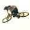 |
MAI 2008 - VTT dans le JURA !! |
Eric s'en vient d'un petit tour en VTT dans le Jura. Vous pouvez évidemment voir les photos de ce prodigieux périple dans l'album photos
Je découvrais cette partie de la France et j'avoue avoir été enchanté. Il faut dire qu'il faisait très ensoleillé et que le VTT permet de visiter des coins assez peu fréquentés.
Les paysages de moyenne montagne sont verdoyants. Le parcours est plus valonné que montagneux et assez roulant (dans les conditions de relative secheresse que nous avons connues). L'alternance de sentiers, routes et chemins, de parties ombragées et d'autres en plein soleil rendent le parcours assez dynamique et agréable.
Les tronçons de +/- 15 km permettent de gérer l'effort et de respecter le niveau de chacun. Enfin, la signalisation est claire et, à moins d'être un peu trop obstiné, on se rend vite compte lorsque l'on fait fausse route.
Et que dire du vin que l'on y boit ? Si ce n'est qu'il est particulier, du moins pour le cepage local, le Savagnin, dont la vinification oxydative rend cet arôme de noix typique du vin jaune.
GRENADINES
Pâques 2008 - On va découvrir notre bateau pour la première fois.
Il faut bien l'admettre, c'est avec un petit pincement au coeur que nous empruntons la passerelle du quai vers la jupe babord. Une fois à bord, nous sommes vite séduits. Les enfants courent de droite à gauche, sortent par les écoutilles, traversent le trampoline et sautent sur le rouf.
Quant à nous, ce sont plutôt les volumes et l'équipement qui nous impressionnent. En plus l'avitaillement a été réalisé et le frigo ronronne déjà.
Sainte Anne
23/03/2008 - Notre premier mouillage en Martinique. On a parcouru 4 miles au moteur depuis notre départ du Marin
On peut d'ores et déjà affirmer que les moteurs vont bien. Contrairement à ce que laissait supposer sa grande taille, le bateau s'avère manoeuvrable. Merci les catamarans.
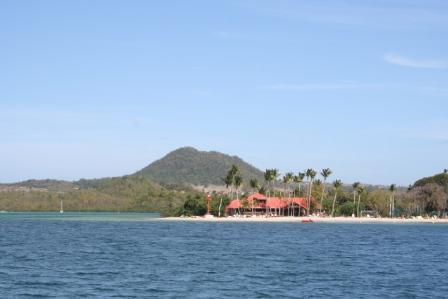
Sainte Lucie
24/03/2008 - Nous mouillons au pied du piton de la Souffrière. C'est assez impressionnant. Nous avons été accueilli par Michel, un boat boy rasta qui nous a guidé vers une bouée au nord de la baie.
Pendant la nuit, on a été réveillé par un bruit sec contre la coque babord. A notre grande surprise, nous avons été percutés par un cata: celui qui était amarré à côté du notre avait emporté sa bouée avec lui...On nous avait bien dit que les corps morts étaient parfois encore bien vifs.
Pour ceux que ça intéresse, nous avons fait la nav de Martinique à Sainte Lucie par 20 noeuds de SE. Le bateau filait 8 à 10 noeuds sous un ris (pas de risques). Et Cécile était malade, comme d'habitude.
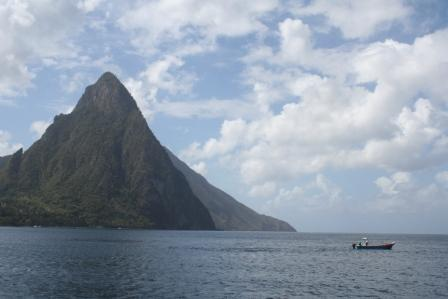
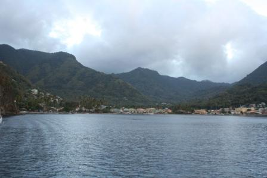
Saint Vincent
25/03/2008 - Nous mouillons à Cumberland Bay, l'antre du baron Noir. La plage de sable noir est assez originale. Et le resto Baron Noir est assez clairement inspiré des rades glauques du Pirates des Caraibes (auquel il a emprunté quelques éléments de décor puisque le film s'est fait dans la baie voisine).
Ici encore, à peine avions-nous pénétré dans la baie que Stanley, le boat boy local perché sur une coquille de noix et à la rame, nous aborde pour nous proposer le meilleur mouillage du coin (on a de la chance).
N'empêche que le mouillage bahaméen (à l'ancre et avec un bout à terre) est nettement plus facile à réaliser à 3 qu'à 2, surtout qu'il faut se rendre à terre pour faire le noeud autour du cocotier.
Pour ceux que ça intéresse, cette deuxième nav de 30 miles fut également un près mais Cécile n'a pas été malade.
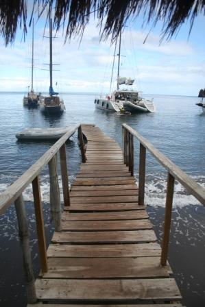
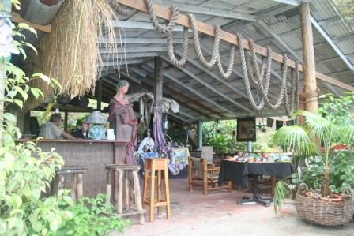
Bequia
26-27/03/2008 - C'est l'heure des tracasseries administratives.
Pas de comité d'accueil à l'arrivée, après une traversée assez secouée et des rinçages réguliers. Enfin une récompense pour Sid: nous croisons le Star Clipper au mouillage.
Le lendemain, retour à la normale: 28°c et mer bleue pour le petit déjeuner sur le pont.
Juste le temps de tenir le journal de bord et nous sommes partis en snorkeling: murènes, poissons multicolores et même une langouste de belle taille.
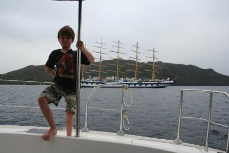
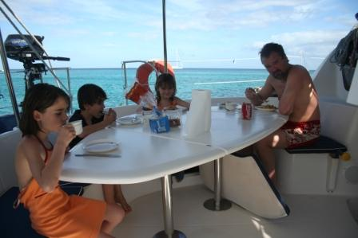
Tobago Cays
28-29/03/2008 - Alors là, si c'est pas le paradis, ça y ressemble.
La mer nous offre tous les dégradés de bleu que l'on puisse rêver. La barrière de corail nous protège de la houle, ce qui fait qu'on a l'impression de mouiller en pleine mer.
On a jeté l'ancre par 2m de fond dans une eau limpide, à 20m d'une plage de sable blanc bordée de cocotiers.
Dès la nuit tombée, on ne voit plus que les feux de mouillage et l'on entend le vrombissement lointain des vagues qui se brisent sur les récifs coraliens.
Putain ! Non seulement il pleut au paradis mais en plus, on a chassé. A quelques secondes près, on se fracassait sur les coraux. En plus, il faisait noir (de chez noir), ce qui a méchamment compliqué le re-mouillage dans le trou de souris qu'on avait trouvé.
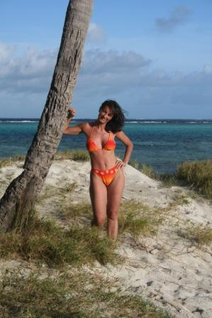
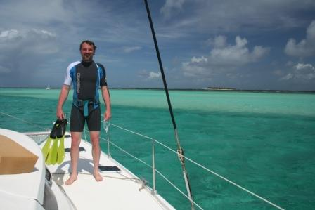
Union - Chatham Bay
30/03/2008 - Après une halte forcée de l'autre côté de l'île pour faire réparer le dessalinisateur (échec sur toute la ligne...), on a décidé de mouiller dans une baie à l'abri du vent.
Notre expérience des Tobagos nous a un peu calmés et l'on va se contenter d'une plage de sable blanc et d'une eau limpide à 27,5°C.
Comme on nous l'avait conseillé, on est directement allé chez Shark Attack, le complexe hotelier du fond de la baie, pour y réserver une table pour ce soir (C'est le truc bleu derrière moi, sur la photo).
Pour la petite histoire, on a découvert l'origine de notre glissade d'hier: un énorme corail qui encombrait l'ancre, la rendant peu sûre (c'est le moins que l'on puisse écrire).
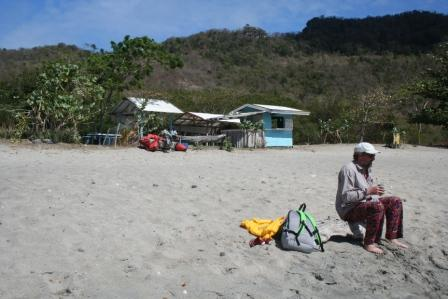
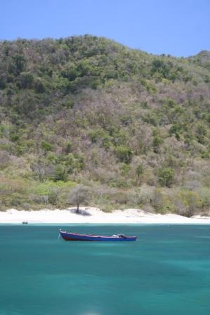
PSV - Petit Saint-Vincent
31/03/2008 - Le midi, on a mouillé au nord de PSV, entre l'île et les récifs.
On pensait faire un petit snorkeling sur la barrière mais le courant était si fort que, même avec les palmes, on n'arrivait pas à avancer.
Après le repas de midi, une nav de 15 minutes au moteur nous a permis de découvrir l'ïle de Mr Richardson. Curieusement, les plages de sable blanc sont défendues par des récifs qui en empêchent partiellement l'accès, même en dinghy, même à la rame.
Après un magnifique coucher de soleil et d'excellentes entrecôtes argentines au barbecue, nous avons pris notre averse tropicale du jour, pour découvrir qu'une fois de plus nous avions chassé.
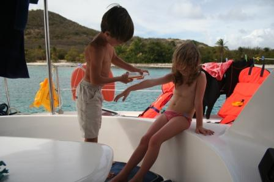
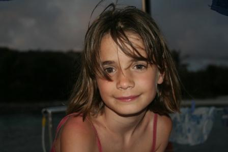
Sainte Lucie - Marigot Bay
2/04/2008 - On est parti de PSV avant hier et depuis, on fait du près et du moteur (pour les bords au vent) sous un bon 25 noeuds, une mer en formation et des grains tropicaux trop fréquents à mon goût. La prem!ère étape de 30 miles nous a conduits à Bequia. Le lendemain, nous repartions le couteau entre les dents.
La traversée de Saint Vincent vers Sainte Lucie (+/- 25 miles) nous a valu quelques frayeurs. Partis sous 2 ris et 1/2 génois, nous avons essuyé le premier grain avec des rafales à 40 noeuds. On a affalé le génois mais cela n'a pas empêché les grains de se succéder, avec des rafales de vent à 46 noeuds (knots selon les instruments). En plus, impossible de tirer un bord au près sans faire un peu de moteur, putain de catamaran !
Enfin, après 9h de nav, on avait parcouru les 60 miles prévus. Il ne nous restait qu'à affronter l'ultime épreuve: le racket organisé à Marigot Bay où nous avons dû débourser 65 EC$ pour une bouée (convertis désavantageusement en 20€ après négociations et tentative de mouillage sauvage)
Martinique - Arlet
3/04/2008 - C'est l'anniversaire de Kenya. On n'a pas prévu de cadeau sur place mais on se rattrapera dès notre retour.
En attendant, la traversée de Sainte Lucie vers La Martinique nous a permis de valider la piètre capacité du Let It Be à remonter au vent. En faisant un près serré (60°) on n'a pas du faire de moteur et on a tenu 7 noeuds de moyenne sur les 30 miles.
Arrivés en Martinique, nous avons mouillé dans la petite anse d'Arlet, où nous avons immédiatement plongé à la recherche d'un vieux gallion (de rhum).
PADI
13/2/2008 - Ca y est. On s'est inscrit au cours de plongée sous-marine. On va suivre la formation proposée par NEMO 33, le seul endroit en Europe qui offre une fosse 'tropicale' de plus de 30m de profondeur. Comme on est supposé fréquenter les plus beaux sites de plongée de la planète durant notre voyage, autant en profiter.